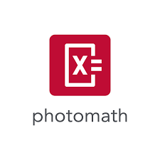
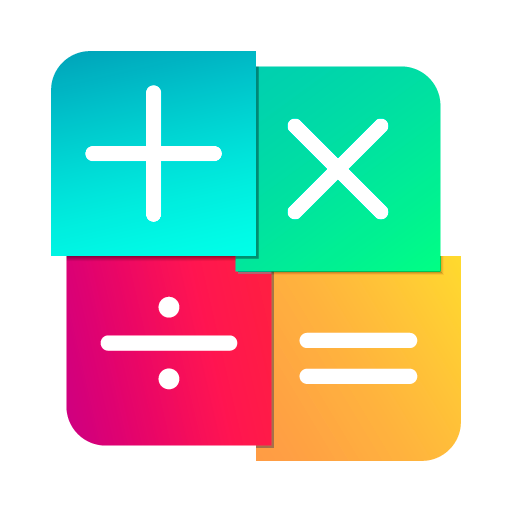
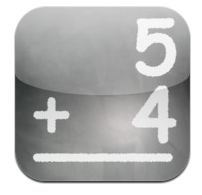

Indicações de aplicativos de matemática, por Augusto Fagundes, Guilherme Carvalho e Rafael Felten
Photomath
O aplicativo Photomath é um aplicativo que vai te ajudar a resolver questões matematicas, usando a camera do seu celular!
Link para download do aplicativo Photomath na imagem
Wolfram Alpha
Lembra do computador de Star Trek? Finalmente está acontecendo - com o Wolfram Alpha. Com base em 25 anos de desenvolvimento liderado por Stephen Wolfram, o Wolfram Alpha se tornou rapidamente a fonte definitiva do mundo para conhecimento especializado instantâneo e computação.
Link para download do aplicativo Wolfram Alpha na imagem

Rei da Matemática
é um jogo rápido de matemática com inúmeros problemas divertidos de várias áreas. Começas como agricultor ou agricultora e vais passando de nível à medida que respondes a perguntas de matemática e aumentas a tua pontuação total. Cada um dos dez níveis tem uma personagem e música novas. Ganha estrelas, atinge objectivos e compara as tuas pontuações com as dos teus amigos e as de outros jogadores de todo o mundo!
Link para download do aplicativo Rei da Matemática na imagem
Matemática, Treine seu Cérebro
Treine seu Cérebro com jogos de matemática. Teste sua mente, habilidade e velocidade na luta com o tempo.
Link para download do aplicativo Matemática, Treine seu Cérebro na imagem
Math Drills
Os exercícios matemáticos têm como objetivo melhorar sua velocidade mental ou, se você estiver sendo preguiçoso, pode dar um pontapé inicial no seu cérebro. Fazer isso 2-3 vezes ao dia tornará você mais rápido em matemática e manterá seu cérebro afiado.
Link para download do aplicativo Math Drills na imagem
